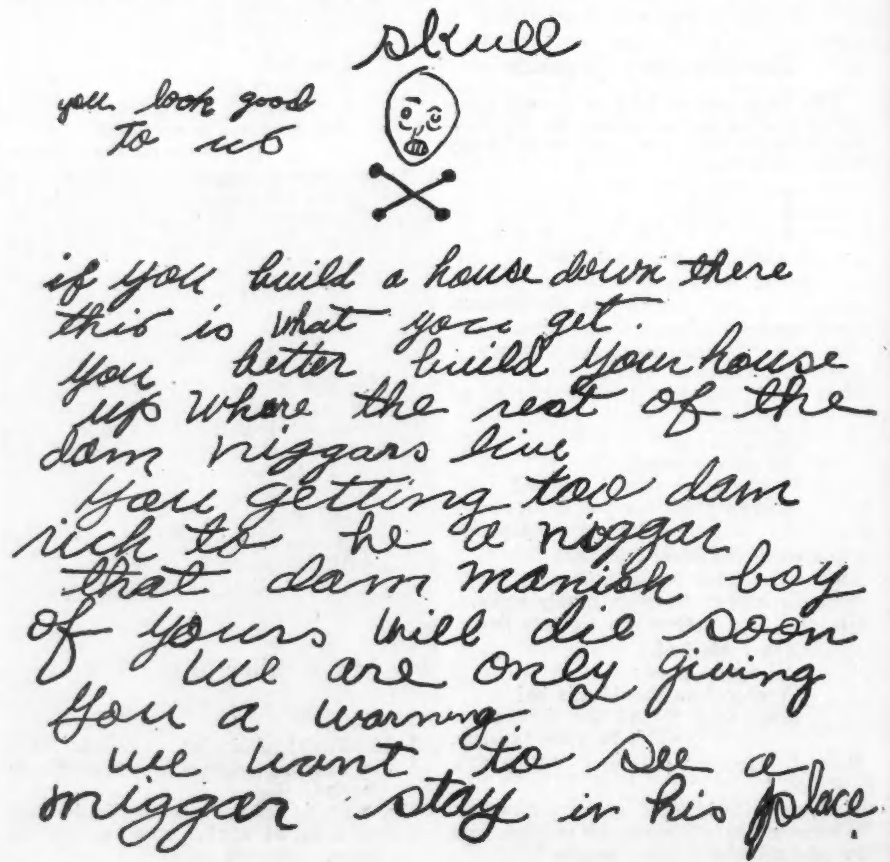

Too Rich to be a Nigger
Forty-odd years ago, when stalwart Young Dendy and slim Martha Duckett were married, their fortune consisted of youth, health and intelligence. They went to housekeeping with cheerful enthusiasm in a one-roomed cabin. Today they live in a spacious home; but the South has robbed them of their gay enthusiasm.
Then their future held no shadow. Young was a carpenter, able and reliable, hence always in demand. He did not know what it meant to be out of a job. His energetic Martha took in washings, kept the cabin spic and span, nursed and cared for her healthy brown babies. Together they worked and saved and shrewdly invested their savings. They moved into a two-roomed cabin, and then, as they prospered and their family grew, they built themselves a neat, four-roomed cottage.
As the children grew the young parents watched them thoughtfully. They sent them to school with punctual regularity and took it as a matter of course that they should lead their classes. Less was hardly tolerated in the Dendy home. But school was not enough. There were the long sunny vacation months to be provided with an occupation. So they bought a little plot of ground—not too much—on which a small cotton crop could be made and the lesson of labor learned as small muscles grew hard. Even baby Mattie, the pet of the family knew what chopping cotton meant and picked her full share from the ripened bolls.
By the time that William, the oldest, had finished the local school Mr. Dendy had become a contractor and was putting up buildings for the white people of Clinton from plans drawn by himself. His integrity was a by-word. And Mrs. Dendy was not behind him. She now hired the best workers in town to help in her laundry although the difficult pieces were trusted to no hands but her own. With the college students whose work she did she formed genuine friendships, and they relished with youthful appreciation her shrewd and humorous insight.
In Clinton, South Carolina, there are three fine large public school buildings—for white children. They are built of brick, two-stories, with excellent equipment, and they are free. There is a splendid high school, the pride of the town—for white children.
For colored children (the population is 60% colored) there is one school. It is a one-story building with fair equipment furnished largely by private funds. The teachers are well-trained. But it is not free. Each child must pay two dollars a year for the privilege of going to this “public school,” in addition to buying his books. Those who cannot pay, and there are many, do not go to school.
But Clinton was of the South, Southern. “We are the best friends of the Negroes,” said the white people; “of course, they are our servants and must stay in their place.” And so, as they prospered, the Dendys were watched closely for the first signs of “uppishness.” But with consummate tact and judgment they avoided touching the sore spots of the sensitive Southerners. Except in one place. They educated their children. William was sent away to school, then to college, to medical school. When he had become a practising physician in a Northern city their white neighbors were reluctantly proud of him, uneasily admiring. Robert, the second son, also went North when he had finished college, and rumors of his success in New York City reached the home town—rumors pleasantly substantiated when, on his later visits he made extensive purchases from the home town merchants.
Viola was perhaps the most popular of all among the white folk. She, pretty and earnest, introduced her favorite subject of home economics in the colored school. By her own persuasive efforts she got the support of the banker who furnished funds for adequate equipment, and of other white people.
And so on. Three of the other Dendy children are now teaching in high schools. One, disabled in the war, is in a military hospital. Then there was Norris.
Norris had inherited his mother’s high spirits without her sagacity, his father’s intelligence without his caution. Brighter than most, he could “outsmart” the white boys. Unwillingly they recognized this and their resentment grew and smoldered. Sullenly they saw him go away to school, indignant, even though many of them had left school by their own preference, or through sheer boredom. It was inappropriate that he should go to college while they stayed at home. He went first to State College in South Carolina then to Virginia Union University. Then he came home.
In 1924 Mr. and Mrs. Dendy decided to build a new house, a comfortable home, large enough for the children, now grown, to return to for family reunions. They selected the location and bought a lot, not on one of the straggling, ill-kept lanes of the colored section, but in a good block on the outskirts of the town, on a well lighted street where improvements were available. There were white homes just a block away. They chose the place from no false pride or snobbishness, but from a desire for the simple comfort of sanitation. When the framework was up, showing the size of the structure, the house became the chief topic of conversation at the dinner tables of the town. Discussion went on furiously. The “best people” approved, openly expressed their approval; but from the “cracker” class came violent indignation—jealous indignation, because the Dendys’ new house was a two-story house, as good as a white man’s; better than many of theirs.
One morning Mr. Dendy received a letter, anonymous and bearing at the top a crudely drawn skull and crossbones.

“You look good to us,” it read. “If you build a house down there this is what you get you better build your house up where the rest of the dam niggers live. You getting too dam rich to be a nigger. That dam manish boy of yours will die soon.”
“We are only giving you a warning.”
“We want to see a nigger stay in his place.”
The “manish boy” was Norris. Mr. Dendy went quietly on with his building, watchfully alert. Public sentiment swayed to his side and nothing happened. Only, from that time Norris became an object of persecution. The crowd of boot-legging, petty politicians who were gradually coming to control the town were out to “get” him. The very presence of this self-reliant boy, well-dressed, educated and intelligent, was an affront to the inferior whites. Twice he was framed on a charge of receiving stolen goods. Without evidence he was convicted in the local court and acquitted on appeal. He had a good lawyer, the best, it was said, in the county. Things had come to a pretty pass when a nigger could hire him a lawyer and win his case in the white man’s court. “He’s too smart,” they grumbled. “His daddy got too much money for a nigger.” They arrested him on other charges and with each acquittal (he never was convicted) their rancor grew.
On the fourth of July, 1933, the colored people of Clinton had a picnic at Lake Murray. Norris drove one truck-load of picnickers and Marvin Lollis, a white man, drove another. Late in the afternoon a dispute arose between Norris and the white man on the subject, it is said, of the relative merits of the trucks they were driving. The argument grew heated, culminating in a verbal outburst from Lollis to which Norris replied by striking him on the mouth.
The rest of the story is brief. The excuse for which they had been waiting was furnished. Rushing back to town on his truck Norris was met and arrested by officers and placed in the local jail—two cells at the back of the police station. His young wife and his mother came to see him but could not get him released. Men began to gather about the building. By nine o’clock a mob filled the police station and cars lined the street outside. The arrival of a man with a coil of rope was the signal for someone to unlock the cell, and the struggle began. Norris was a powerful man and no coward, but finally he was overpowered and bound. His mother stood outside, his baby in her arms, her frantic pleadings in vain, as they threw him in a car and drove away. Somebody knocked her down and all she remembers after that is the line of cars speeding past the Methodist church.
Next day the body was officially “discovered” a few miles out of town. He had been half-strangled before they beat him to death.
Clinton—white Clinton—has had its revenge: Mr. and Mrs. Dendy, in their spacious home, go drearily about the day’s routine. Perhaps it is as well for them that they have Amanda, Norris’ girl-widow, and her babies to provide for. The sympathy of their friends, white and colored, brings small comfort. A life-time of exemplary behavior could not protect their boy from the white savage.
“What was the use?” ponders Mrs. Dendy as she mechanically rocks the baby. Everywhere oppressed Negroes echo, “What is the use?”